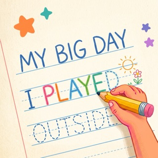

Handwritten JournalYour child says what happened today, the words appear on a ruled page, and they write over them in their own hand. Finish a line and the guide disappears. Keep it, and a year of days becomes a book in their handwriting.
Download on the App StoreAutoplays muted, with captions. Finished lines have become their handwriting; the line in hand is marked green as they write.
Handwriting practice is dull. Journalling is not. If the sentence they practise is one they wanted to say, practice stops being practice.
Ink inside the letter turns green and ink outside turns red, while they write, never afterwards. A letter drawn backwards gets taught on the spot.
The i in with was drawn out of order. The page pauses, shows the letter once, and lets them carry on.
Marked letter by letter, as they write. Half a letter scores like half a letter.
A letter drawn out of order keeps 80% of its score, and the page teaches that one letter before carrying on.
Finish a line and the guide underneath disappears. What is left is their handwriting, exactly where they wrote it.
Every letter Aa to Zz and 0 to 9 draws itself stroke by stroke, with arrows to follow.
Free, and not because you are the product.
There is no account, no server, no analytics and no advertising. Nothing leaves the iPad unless a grown-up taps Share.
Speech is recognised on the iPad. No audio is recorded or kept.
App Privacy label: Data Not Collected. Read the privacy policy
You choose the letter style and size. Nothing has to be earned to make the letters bigger.
Five typefaces: Jua, Andika, Varela Round, Sniglet and Comic Neue. Andika is there because some children read it far more easily.
Several children, one iPad. A profile each, with an optional PIN.
Progress is kept per font-and-size setting, so a change of size never looks like regression.
Export a page, or the whole book, as a PDF. Print it for a grandparent.
Every face is previewed at its real size before you pick it.
Not a curriculum. Not a reading app. Not a game with levels to unlock. Not online.
Made for children roughly five to eight who can speak in sentences and are learning to form their letters. iPad, held like a notebook. Apple Pencil recommended; a finger works.
Everything in this version is included. Nothing has to be unlocked to make the letters bigger.
Download on the App StoreiPad, iOS 18 or later. Apple Pencil recommended; a finger works.
One page each, ready to print or forward.